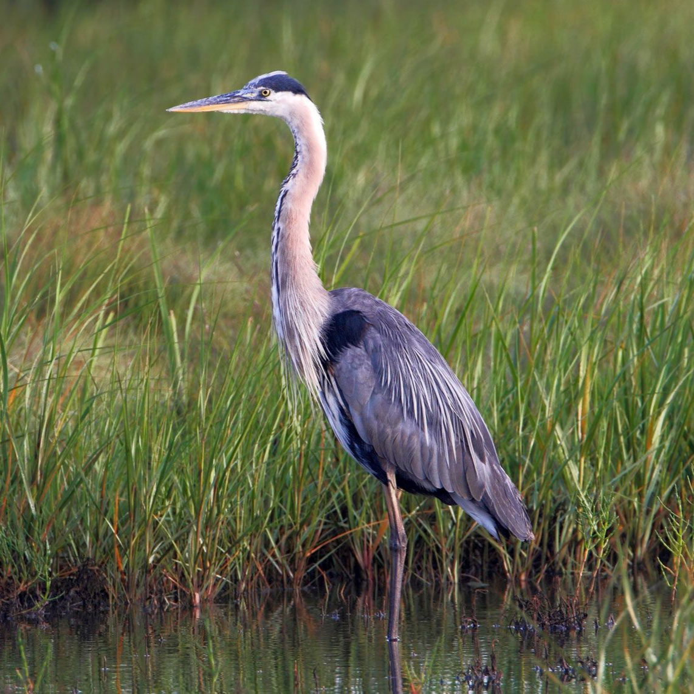
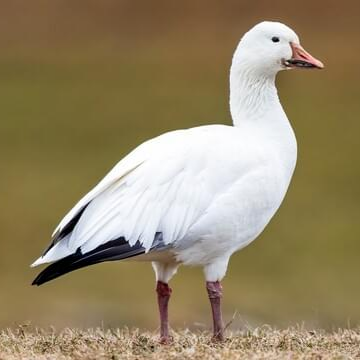
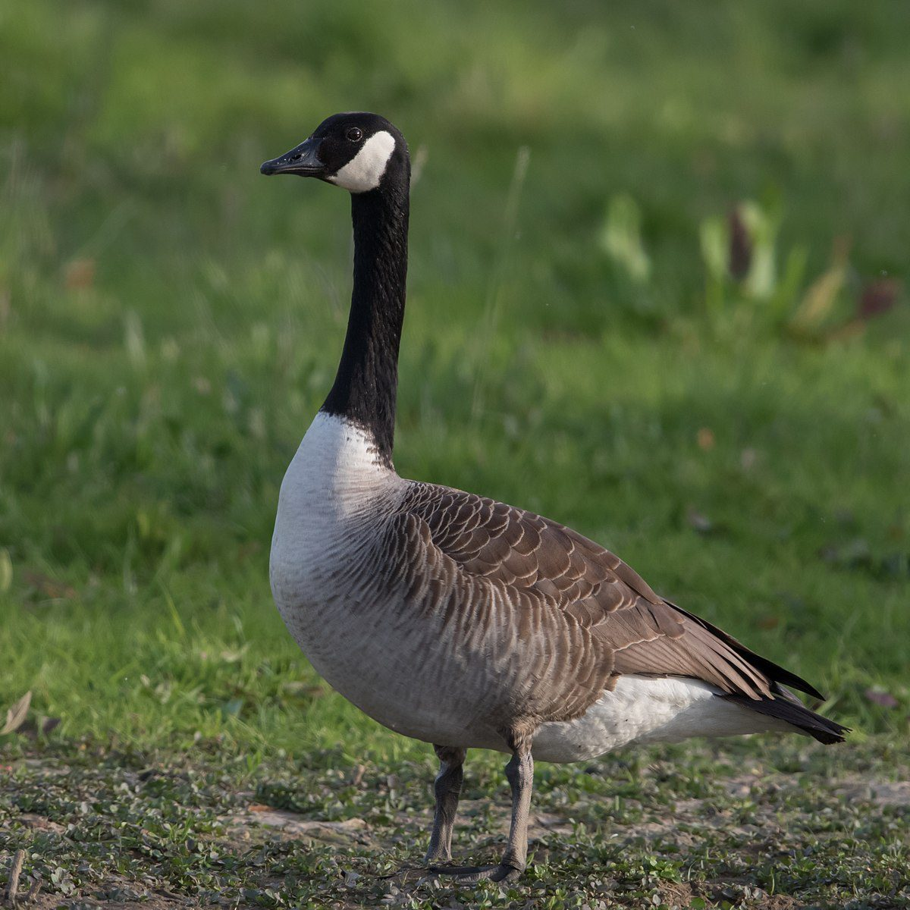
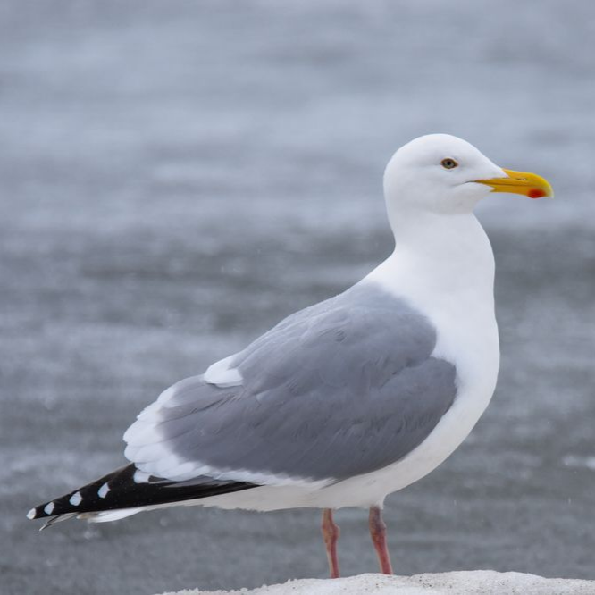
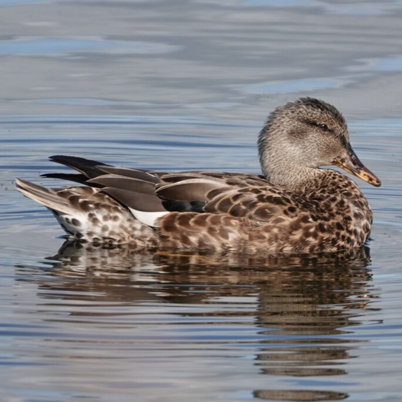
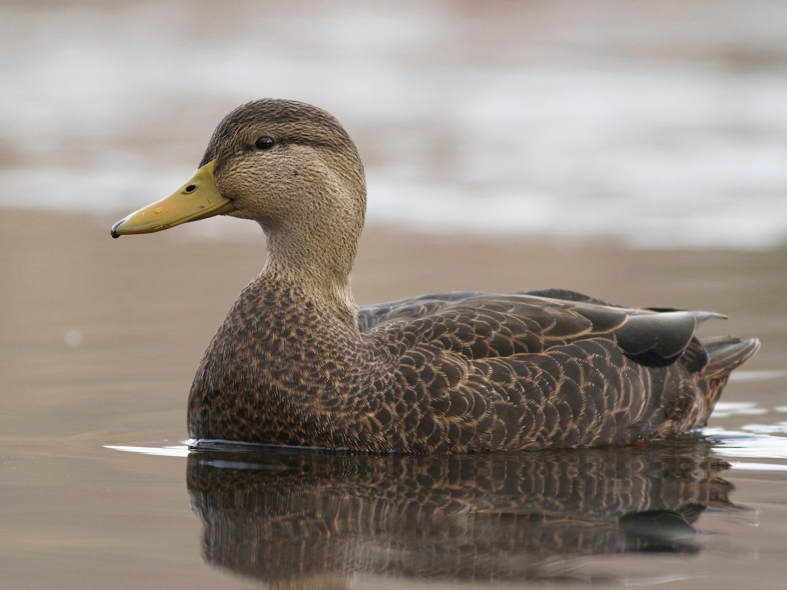
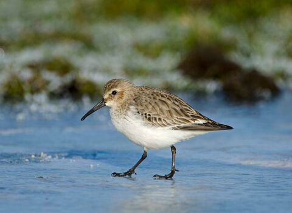

SHORE BIRDS




Great Blue Heron
Color: Blue-gray, whiteHabitat: Marshes
Food: Fish
Nesting: Trees
Behavior: Stalker
Fun Fact: Weigh only 5-6 pounds
Snow Goose
Color: Black, whiteHabitat: Lakes and ponds
Food: Plants
Nesting: Ground
Behavior: Ground Foraging
Fun Fact: Chicks are already well developed when they hatch
Canada Goose
Color: Brown, black, whiteHabitat: Marshes
Food: Seeds
Nesting: Ground
Behavior: Ground Foraging
Fun Fact: Species contains at least 11 subspecies
American Herring Gull
Color: White, grayHabitat: Shorelines
Food: Omnivore
Nesting: Ground
Behavior: Ground Foraging
Fun Fact: Have special glands in their eyes that allow them to secrete salt to prevent dehydration




Nothern Shoveler
Color: Green, white, brownHabitat: Marshes
Food: Omnivore
Nesting: Ground
Behavior: Dabbling
Fun Fact: Monogomous and remain together for longer than most other dabbling ducks
Gadwall
Color: Brown, gray, blackHabitat: Marshes
Food: Plants
Nesting: Ground
Behavior: Dabbling
Fun Fact: Sometimes steal food from diving ducks when they surface
American Black Duck
Color: Dark BrownHabitat: Lakes and ponds
Food: Insects
Nesting: Ground
Behavior: Dabbling
Fun Fact: Newly hatched ducklings leave the nest as soon as their feathers dry
Dunlin
Color: Brown, whiteHabitat: Shorelines
Food: Aquatic invertebrates
Nesting: Ground
Behavior: Probing
Fun Fact: Used to be named the "red-backed sandpiper" after its breeding plummage